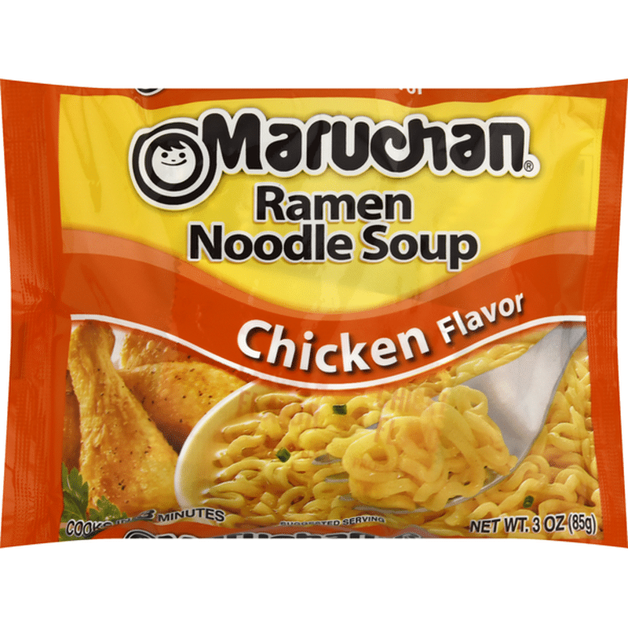

Maruchan® Ramen Noodle Soup - Chicken Flavor

Description
About as cheap and easy as it gets
Ramen Noodle Ingredients
-
ENRICHED WHEAT FLOUR
- WHEAT FLOUR
- NIACIN
- REDUCED IRON
- THIAMINE MONONITRATE
- RIBOFLAVIN
- FOLIC ACID
- VEGETABLE OIL (CONTAINS ONE OR MORE OF THE FOLLOWING: CANOLA COTTONSEED PALM) PRESERVED BY TBHQ
- CONTAINS LESS THAN 1% OF: SALT
- POTASSIUM CARBONATE
-
SOY SAUCE
- WATER
- WHEAT
- SOYBEANS
- SALT
- SODIUM CARBONATE
- SODIUM HEXAMETAPHOSPHATE
- SODIUM TRIPOLYPHOSPHATE
- MONOSODIUM PHOSPHATE
Soup Base Ingredients
- SALT
- SUGAR CONTAINS LESS THAN 1% OF: MONOSODIUM GLUTAMATE
- MALTODEXTRIN
- SPICES (CELERY SEED)
- HYDROLYZED CORN PROTEIN
- HYDROLYZED WHEAT PROTEIN
- HYDROLYZED SOY PROTEIN
- TURMERIC
- NATURAL FLAVORS
-
DEHYDRATED VEGETABLES
- DISODIUM GUANYLATE
- DISODIUM INOSINATE
- YEAST EXTRACT
- VEGETABLE OIL (PALM)
- LACTOSE
- POWDERED COOKED CHICKEN
Steps
- Bring 2 cups of water to a boil
- Add noodles
- Cook until desired noodle consistency
- Remove from heat
- Add flavor packet
- Enjoy!